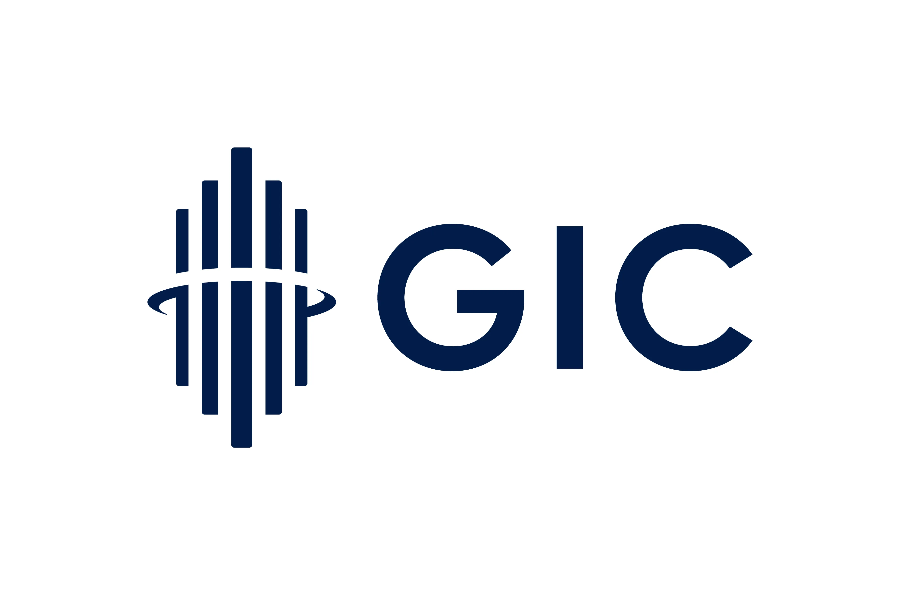
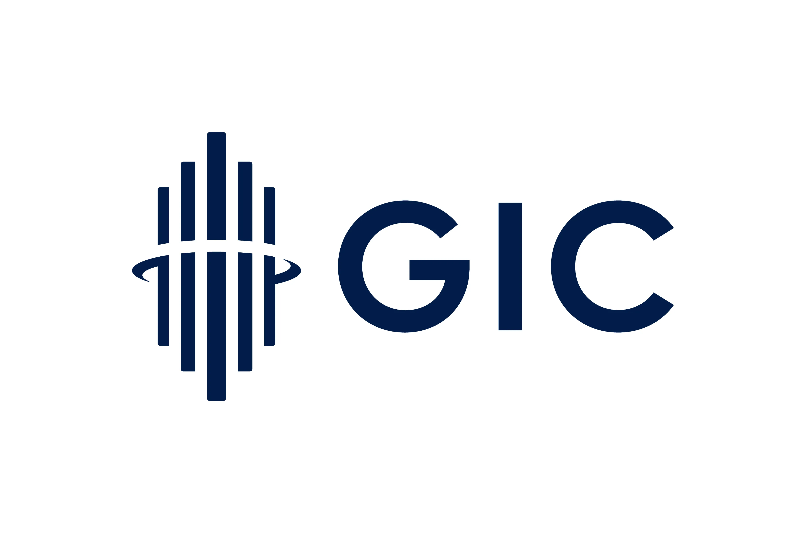

The Team
Our team has on average over 12 years of investing experience and has been through numerous economic cycles. The team's extensive experience in the financial industry gives GAO a deep understanding of the markets and specializations across asset classes.
Chauwei Yak
Founder and CEO

Chauwei Yak, CEO, founded GAO in 2008. She has over 20 years of experience in the financial industry. Prior to founding GAO, she was Executive Director of Research for Citadel Capital in New York.
Yongjie Yi
Chief Investment Officer

Yongjie Yi is the CIO of the Fund. Before joining GAO, he was a portfolio manager with Citadel Capital. He specializes in quantitative trading strategies across Asian markets.
 
